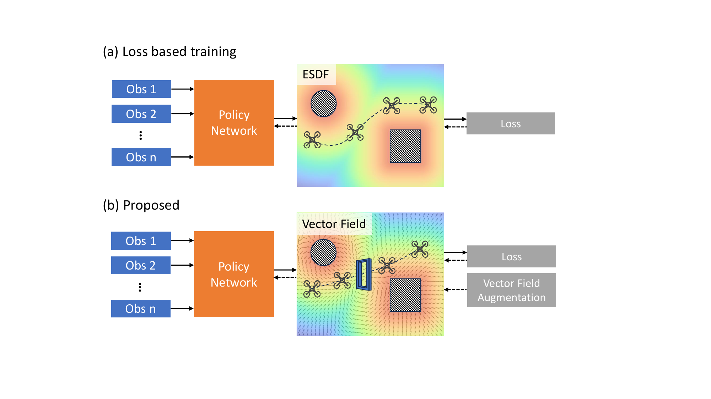
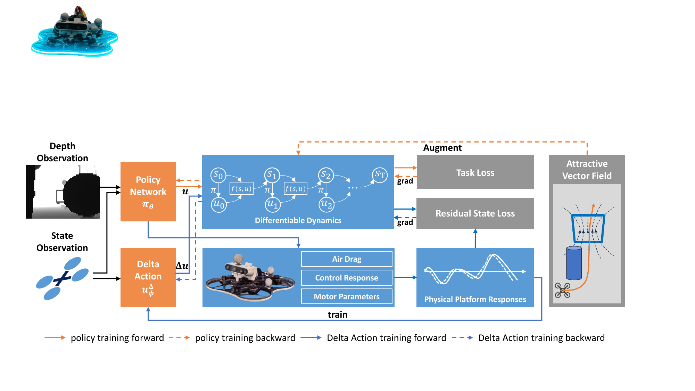
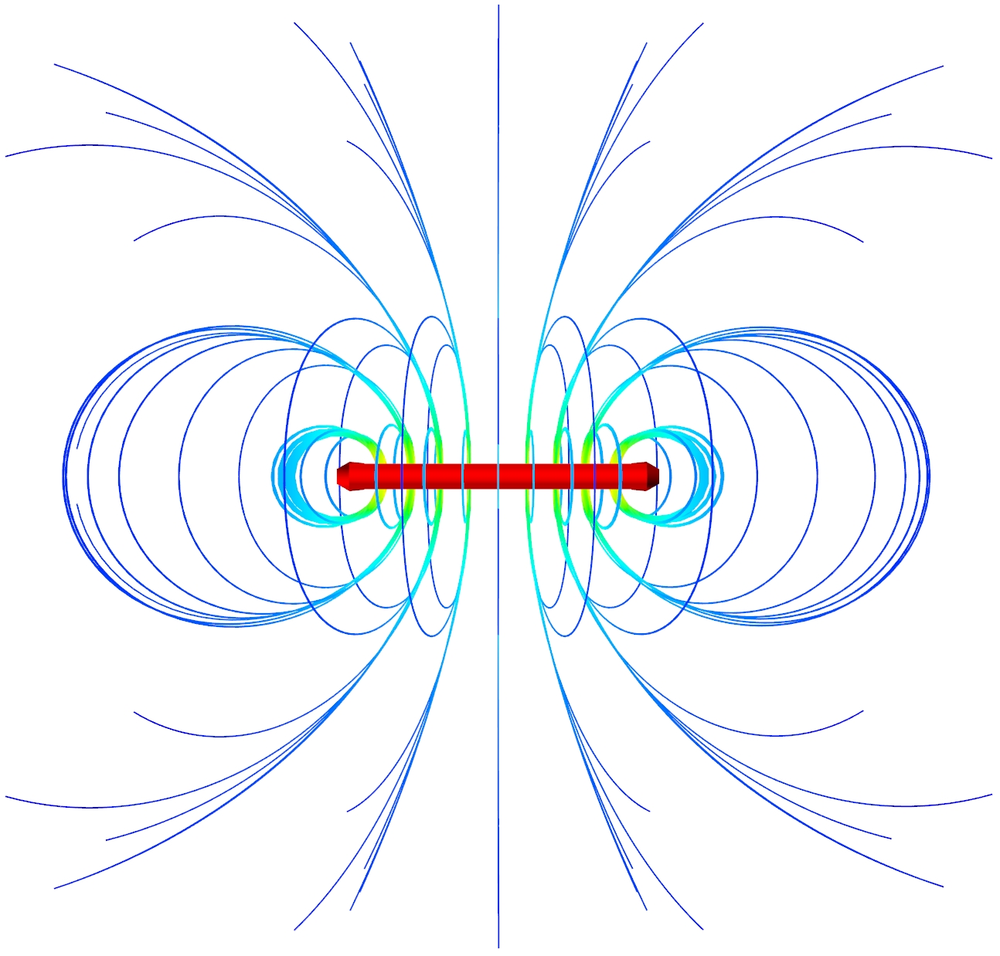
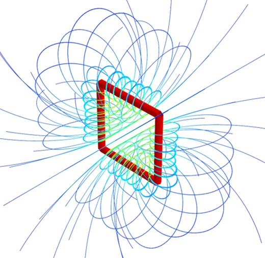
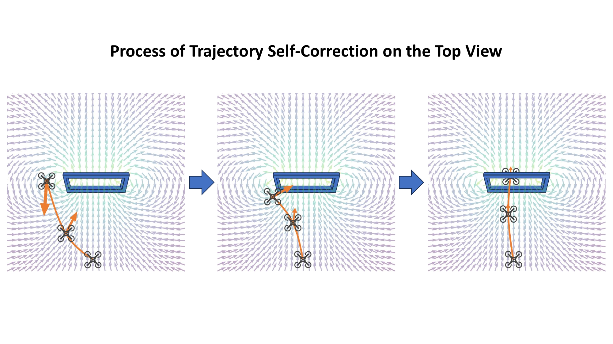
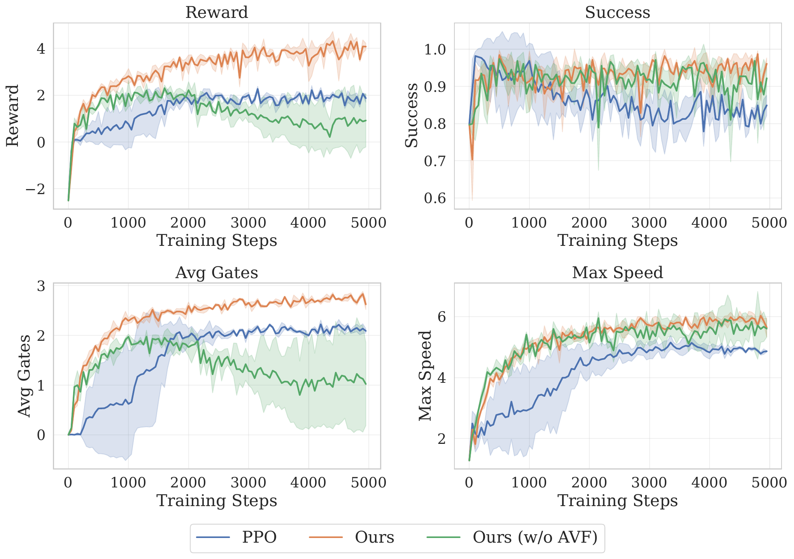
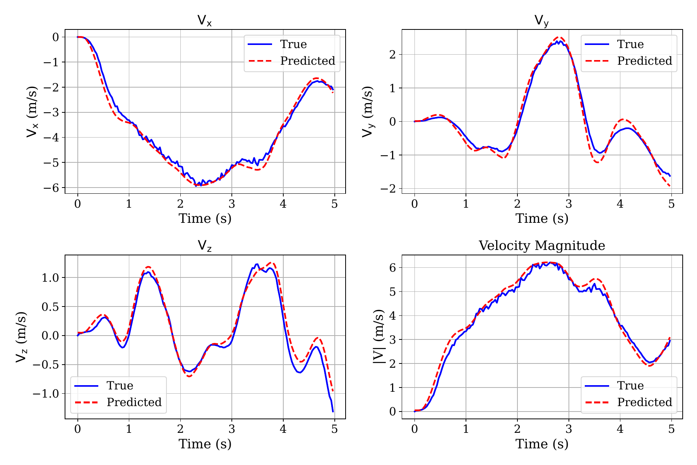

Vector Field Augmented Differentiable Policy Learning for Vision-Based Drone Racing
Abstract
Autonomous drone racing in complex environments requires agile, high-speed flight while maintaining reliable obstacle avoidance. Differentiable-physics-based policy learning has recently demonstrated high sample efficiency and remarkable performance, but applying such methods to drone racing remains difficult because gate traversal is hard to express as smooth differentiable losses. We propose DiffRacing, a vector field-augmented differentiable policy learning framework that combines differentiable loss and Attractive Vector Fields to provide continuous, stable gradient signals for balancing safety and high-speed gate traversal. We further introduce a differentiable Delta Action Model to compensate dynamics mismatch for efficient sim-to-real transfer. Extensive simulation and real-world experiments demonstrate superior sample efficiency, faster convergence, and robust flight performance.

Fig. 1: Attractive Vector Fields provide geometric prior for gate traversal during differentiable policy learning.

Fig. 2: Full DiffRacing framework with differentiable simulator, AVF augmentation, and Delta Action Model.

Fig. 3(a): Top view of the constructed 3D magnetic field.

Fig. 3(b): Axonometric view of the magnetic field used for AVF guidance.

Fig. 4: Overshooting trajectories are gradually corrected by Attractive Vector Fields.

Fig. 5: Performance comparison across different training schemes.

Fig. 6: Velocity components in real-world flight with Delta Action Model compensation.
Method Overview
Additional Visualizations
Trajectory self-correction under AVF guidance.
Comparison of training schemes in simulation.
Velocity prediction (simulation) vs. measured motion capture data.
Real-World Experiments

BibTeX
@article{su2026diffracing,
title={Vector Field Augmented Differentiable Policy Learning for Vision-Based Drone Racing},
author={Su, Yang and Yu, Feng and Hu, Yu and Niu, Xinze and Zhang, Linzuo and Sun, Fangyu and Zou, Danping},
journal={IEEE Robotics and Automation Letters},
year={2026},
note={Preprint version, accepted in March 2026}
}